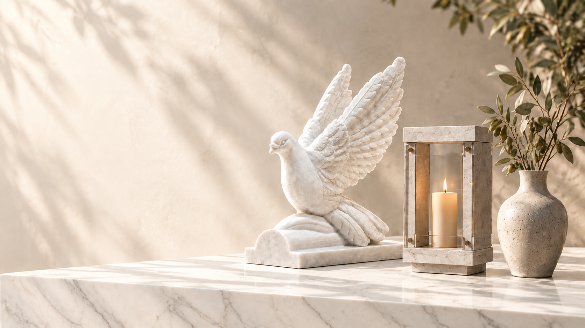
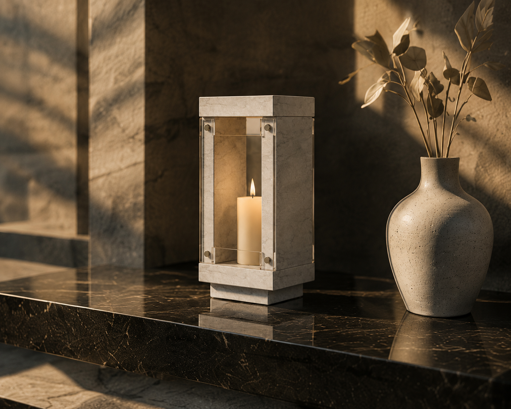
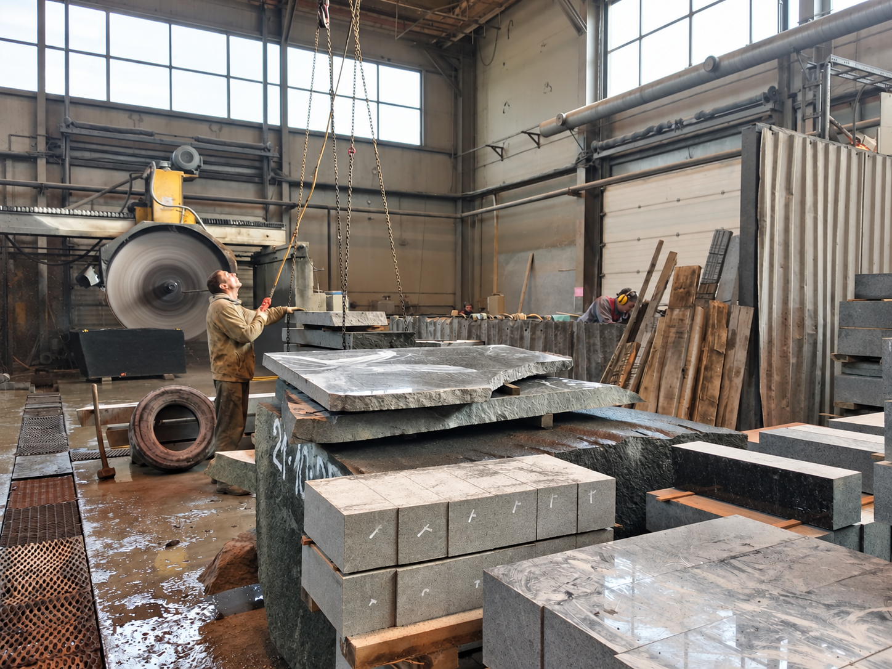
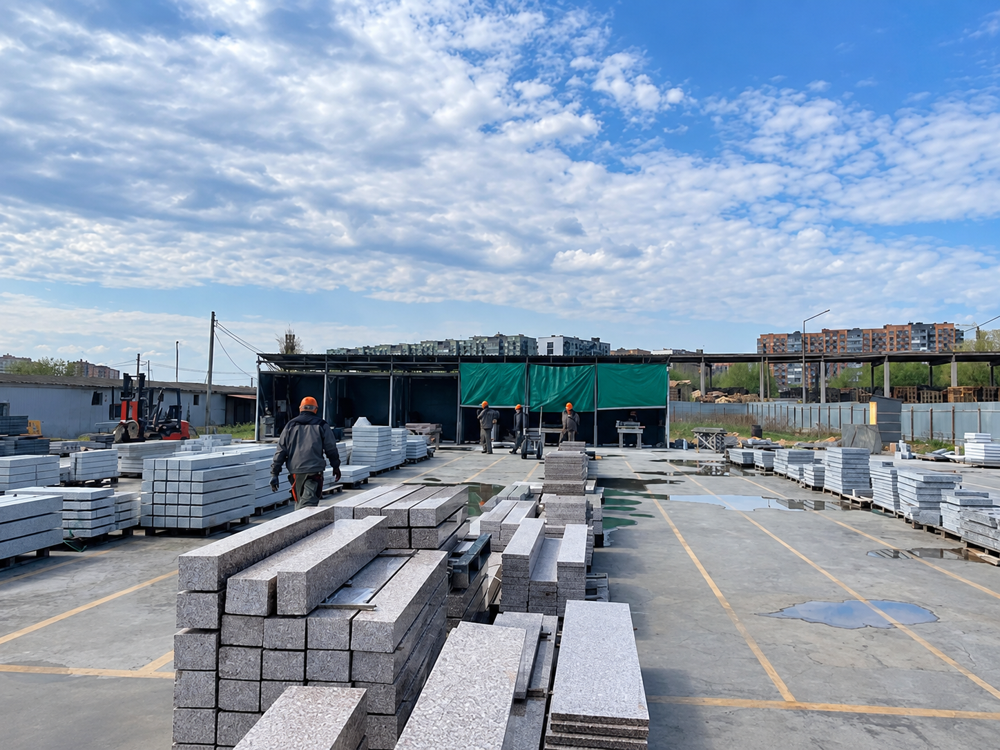
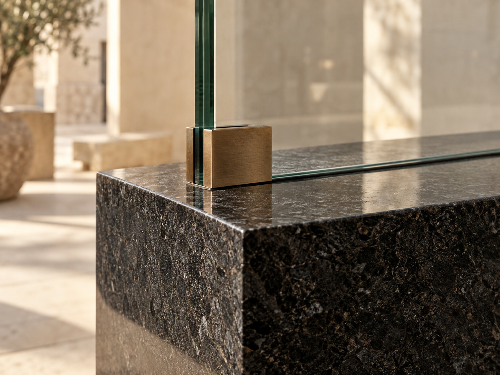
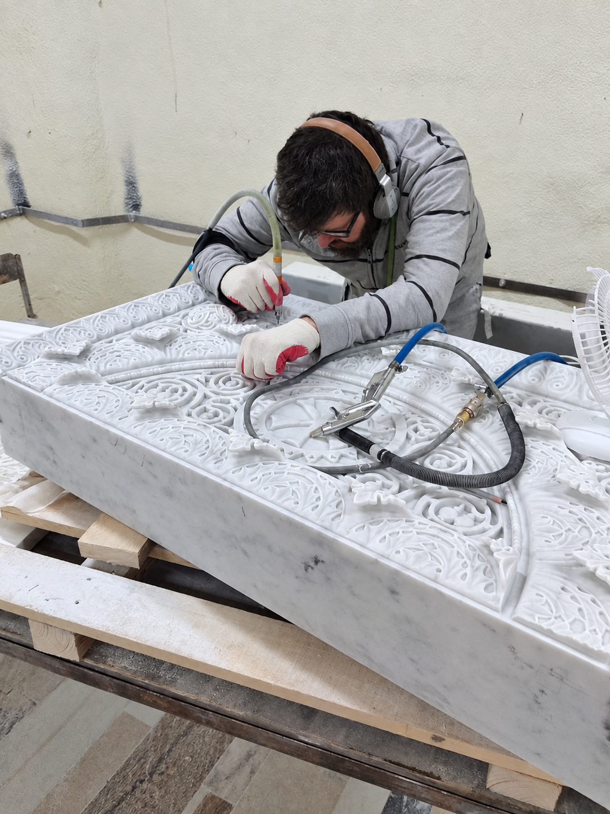
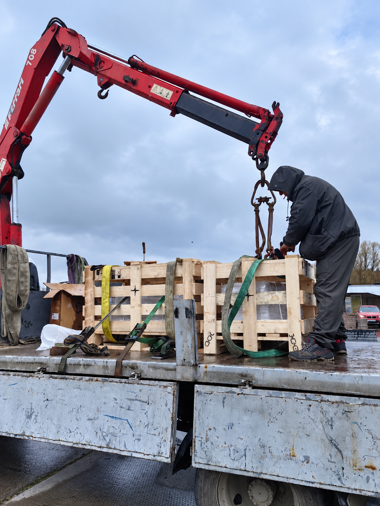

ИСКУССТВО В НАТУРАЛЬНОМ КАМНЕ
Изделия из гранита
и мрамора
на заказ
Выберите изделие из каталога или предложите свою идею. Подберём камень, согласуем размеры и детали исполнения — и изготовим в собственной мастерской.
камень
начала работ
3D-эскиза

Что мы создаём
НАТУРАЛЬНЫЙ КАМЕНЬ. ВАШЕ ИСПОЛНЕНИЕ.ВАША ИДЕЯ — НАШЕ МАСТЕРСТВО
Подберём вариант
и обсудим стоимость
Ответьте на четыре вопроса. Поможем сформулировать задачу и подобрать вариант исполнения.
- 1
- 2
- 3
- 4
- 5
Быстрый ориентир по стоимости.

Ваша идея.Наше мастерство.
НАТУРАЛЬНЫЕ МАТЕРИАЛЫ
Материалы
и сочетания
Гранит, мрамор, стекло и металл — подбираем материалы и сочетания под конкретное изделие.
Гранит
Работаем с разными породами гранита — не только с классическим чёрным. Используем светлые, зелёные, красные и другие цветные камни, подбирая оттенок и фактуру под характер изделия. Гранит хорошо сочетается со стеклом и металлом и подходит как для лаконичных, так и для более выразительных решений.
Мрамор
Используем натуральный мрамор с мягким рисунком и светлой пластикой. Одно из основных решений — белый уральский мрамор Коелга, который ценится за спокойный оттенок, естественную фактуру и возможность тонкой художественной обработки. Особенно хорошо подходит для светлых и скульптурных элементов.
Стекло
Стекло используем как самостоятельный элемент и в сочетании с натуральным камнем и металлом. В зависимости от задачи применяем прозрачное, осветлённое, матированное и другие варианты стекла. Оно добавляет композиции лёгкость, глубину и позволяет создавать более современные и необычные решения.
Металл
Работаем с нержавеющей сталью, титаном и кортеном. Металл используем для букв, медалей, символов, графических элементов, декоративных вставок и отдельных конструктивных деталей. Он позволяет добавить изделию контраст, точность и выразительные акценты.





ПОДХОД К РАБОТЕ
От выбора камня
до готового изделия
Собственная мастерская
Изготавливаем изделия в собственной мастерской и контролируем каждый этап работы — от подготовки материала до финальной обработки. Это позволяет внимательнее прорабатывать детали, согласовывать нестандартные решения и не зависеть полностью от стороннего производства.
Работаем с натуральным камнем
Подбираем камень не только по цвету, но и по рисунку, фактуре и характеру будущего изделия. Работаем с разными породами гранита и мрамора, чтобы предложить не один стандартный вариант, а материал, который действительно подходит под задачу и визуальную идею.
Камень + стекло + металл
Не ограничиваемся только камнем. Сочетаем гранит и мрамор со стеклом, нержавеющей сталью, титаном и кортеном, чтобы создавать более выразительные и современные изделия. Это даёт больше возможностей для формы, деталей и индивидуального характера проекта.
Индивидуальное изготовление
Можно выбрать готовое решение или обратиться со своей идеей, фотографией или эскизом. Поможем адаптировать форму, материалы и детали под конкретную задачу и подобрать реалистичный вариант исполнения.
Помогаем с доставкой
Обсуждаем подходящий способ передачи и доставки готового изделия с учётом его размера, веса и региона. Наша задача — чтобы клиенту не приходилось самостоятельно разбираться в упаковке и логистике сложного изделия.
Как проходит заказ
Понятный путь от первого разговора
до готового изделия.
- 01
Обсуждаем задачу
Расскажите об идее, покажите фотографию или эскиз. Уточним детали и возможные варианты.
- 02
Подбираем решение и материалы
Обсудим форму, размеры, камень и сочетания с другими материалами.
- 03
Изготавливаем
Работаем по согласованному варианту, уделяя внимание деталям изделия.
- 04
Передаём / организуем доставку
Согласуем способ передачи и условия доставки готового изделия.
01Обсуждаем задачу
Расскажите об идее, покажите фотографию или эскиз. Уточним детали и возможные варианты.
02Подбираем решение и материалы
Обсудим форму, размеры, камень и сочетания с другими материалами.
03Изготавливаем
Работаем по согласованному варианту, уделяя внимание деталям изделия.
04Передаём / организуем доставку
Согласуем способ передачи и условия доставки готового изделия.
FAQ
Частые вопросы
Можно ли изготовить изделие по фотографии, эскизу или собственной идее?
Пришлите пример или опишите задумку. Обсудим, как её можно реализовать в камне, и уточним необходимые детали.
Можно ли изменить размеры, материал или отдельные детали?
Да, индивидуальные размеры и детали можно обсудить. Возможность изменений зависит от конструкции и выбранного материала.
Можно ли организовать доставку изделия?
Да, возможность и условия доставки обсудим с учётом размеров, веса изделия и адреса получения.
Как узнать стоимость изделия?
Стоимость зависит от материала, размеров и сложности работы. Пройдите подбор или расскажите о задаче — это поможет подготовить расчёт.
СЛЕДУЮЩИЙ ШАГ — ПРОСТО РАЗГОВОР
Обсудить изделие
Оставьте контакты — свяжемся с вами в рабочее время и обсудим детали изделия